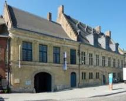
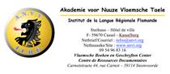

> nieuwsbrief
> 1e trimester 2015
| Bijdragen over: |
Hoewel
we, zoals elk jaar overigens, straks weer geconfronteerd zullen
worden met de – uiteraard weer eens naar boven – aangepaste
posttarieven, blijft uw ledenbijdrage voor 2015 ongewijzigd. Ze
beloopt voor het in mei te verschijnen nieuwe Jaarboek De Nederlanden
‘extra muros’ en voor de
driemaandelijkse Nieuwsbrief Zannekin
29 €. Vanaf 35 € wordt u met dank als steunend lid geboekt.
Maakt
u bij voorkeur gebruik van ons ‘Belgische’ zogenaamd ‘Europees’
rekeningnummer, waarvan de rekeningoverzichten ons dagelijks
meegedeeld worden.
Belgische rekeningnummer: IBAN: BE13 4648 2202 5139 - BIC:
KREDBEBB -- Nederlands rekeningnummer: IBAN: NL68 INGB
0003 8769 53 - BIC: INGBNL2A.
Leden genieten bovendien ook
een tastbare vermindering op de deelnamekosten van de Zannekin-activiteiten.
Zannekin-activiteiten 2015
Dit
jaar keren we de volgorde van onze traditionele om: de Ontmoetingsdag plannen we op zaterdag
30 mei te Bergen/Mons; de Studie-uitstap
komt er op zaterdag 17 oktober: vanuit Halle verkennen
we dan het oude Henegouwen aan weerskanten van de ‘Schreve’.
In
2015 plannen we – in het kader van 1815 en de hereniging van de
Nederlanden - een meerdaagse reis
rond koning Willem I. Deze
is gepland van 21 tot en met 25 augustus en zal ons
doorheen de Benelux-landen gidsen naar locaties die herinneren
aan deze vorst.
Noteer alvast deze data waarop we in de volgde nummers
uitgebreid terugkomen.
De waanzinnige veertiende eeuw…
Herman Vandormael
Wij gaan zevenhonderd jaar terug in de tijd. 1314, het
veertiende jaar van de eeuw die sedert het werk van Barbara
Tuchman ‘de waanzinnige veertiende
eeuw’ wordt genoemd.
En ja, ‘waanzinnig’, zo mag deze eeuw wel heten. Het
is de eeuw, niet alleen van de overbekende Guldensporenslag en
de slag bij Westrozebeke – de twee die wij nog kennen uit onze
schooltijd -, maar de eeuw waarin adellijke heren constant hun
vetes uitvechten, de eeuw van de Honderdjarige Oorlog met zijn
tientallen bloedige veldslagen, de eeuw van de volksopstanden
tegen de hoge heren. En in al die voortdurende oorlogen, die met
geweld over Europa rollen, duiken plunderende huursoldaten op,
die de lokale bevolking brandschatten, de stulpjes en de oogst
van de arme boeren in brand steken, hun vee stelen, hun vrouwen
en dochters aanranden…
In 1314, jaar van de stichting van ‘ons’ klooster – te
Herne, moet de Engelse koning Edward II niet minder dan 10 000
doden achterlaten in een veldslag tegen de Schotten van Robert
Bruce. In datzelfde jaar wordt in Parijs Jacques de Molay,
laatste grootmeester van de Tempeliersorde -, op de brandstapel
ter dood gebracht. Nog in datzelfde jaar gooit de Franse koning
Filps IV zijn drie schoondochters in de gevan-genis, omdat zij
aanstoot geven met hun weinig deugdzame levens-wijze. Met andere
woorden: een waanzinnige eeuw.
Het is ook de eeuw van de pest, de Zwarte Dood, die
tussen 1347 en 1351 – in vier à vijf jaar slechts – een derde
van alle Europeanen het leven kost, een ziekte waartegen men
geen verweer heeft, tenzij misvieringen, processies en
bedevaarten, waarbij men niet beseft dat precies zulke
bijeenkomsten de opmars van de besmettelijke ziekte in de hand
werken. Het aantal slachtoffers wordt geraamd op 25 à 50
miljoen, zoveel als in de Tweede Wereldoorlog. In Parijs, waar
de pest woedt tot eind 1349, zijn er 800 doden per dag, in
totaal 50000, de helft van de bevolking. In gesloten ruimten,
zoals kloosters, is besmetting van één persoon meestal
besmetting van iedereen, zoals in de franciskanerkloosters van
Carcassonne en Marseille, waar niemand overleeft. De broer van
Petrarca, lid van de kartuizerorde, begraaft zijn prior en alle
medebroeders, tot hij alleen overblijft en met zijn hond op stap
gaat om een klooster te vinden dat hem wil opnemen. En de
wetenschap, of wat ervoor doorgaat, staat machteloos. Zij houdt
zich bezig met vragen als ‘Wat gebeurt er met vuur als het uitgaat?’, ‘Hoe kan de
aarde die zwaar is in de lucht blijven hangen?’, of ‘Hoe bereikt de ziel het
hiernamaals?’ De geleerde heren van de medische faculteit
van Parijs schrijven de ramp van de pest toe aan ’een drievoudige conjunctie
van Saturnus, Jupiter en Mars’, die zich heeft voorgedaan
op 20 maart 1345.
En het is ook de eeuw van het Westers Schisma, met,
sedert 1309, een paus in Avignon; nadien twee pausen, in Avignon
en Rome. Theologen bevechten elkaar, schotschriften vliegen over
en weer, pausen excom-municeren elkaar, en elkaars aanhangers.
De kwestie laat de kartuizers van Herne niet onberoerd,
aangezien zij, via de Grande
Chartreuse, rechtstreeks onder het gezag van de paus
ressorteren. Als hun ‘moederhuis’ voor Clemens kiest, die in
Avignon woont, kiezen zij waar voor hun geld.
Maar keren wij terug naar Herne, 1314. De kerk – die
we er thans aantreffen – staat er niet. Er staat wel een kerk,
veel kleiner, donker. Geen licht, misschien een paar kaarsen op
het altaar. Daar staat een pastoor te murmelen, met een tekst
die hij afleest, in een taal die hij misschien zelf niet
begrijpt. Geen stoelen, wij zitten op de grond, of hurken of
leunen tegen een pilaar. Mensen gaan in en uit, babbelen,
roepen. Af en toe loopt een verdwaalde hond naar binnen, en
wordt door de ‘hondenslager’ naar buiten gejaagd. Een kreupele
bedelaar hinkt rond… En buiten? De Kerkstraat is er niet, er is
helemaal geen straat, alleen een aardeweg die bij regenweer in
een slijkpad verandert.
En dan gebeurt het wonder: op precies één kilometer
van deze kerk zal een klooster tot stand komen. Dat klooster was
de wens van Walter II van Edingen. Maar hij is vier jaar vroeger
overleden, en zijn wil wordt nu uitgevoerd door zijn weduwe, die
optreedt in naam van haar nog jonge zoon Walter III.
Zijn die edelen dan zo vroom, dat zij zomaar een
klooster op hun grondgebied willen? Zeker niet. Maar zij staan
aan de top van de maatschappij, zij zijn machtig en rijk, en hun
leven bestaat uit vechten en feesten. En dat zijn nu juist de
mensen waartegen predikers het opnemen. Over die machtigen en
rijken schrijft John Bromyard : ‘Hun ziel zal, in plaats van paleis en kasteel, de
diepste hellepoel tot verblijfplaats hebben… In plaats van
geparfumeerde baden zal hun lichaam een nauwe spleet in de
aarde krijgen, smeriger dan een bad van pek en zwavel. In
plaats van een zacht bed zullen zij er een krijgen, dat
pijnlijker is en harder dan alle spijkers ter wereld… In
plaats van vrouwen zullen zij padden krijgen, in plaats van
een groot gevolg en een stoet volgelingen zal hun lichaam een
menigte wormen en hun ziel een drom duivels hebben. In plaats
van een groot landgoed zal het een eeuwige gevangenis zijn…,
in plaats van lachen, wenen, in plaats van gulzigheid en
dronkenschap zal er honger en dorst zonder einde zijn…en in
plaats van de kwelling die zij anderen aandeden, zullen zij
eeuwig worden gekweld’.
Het ziet er niet goed uit voor de edele heren en
dames… Maar er is een uitweg! Je kan, om ze te vereren,
relikwieën kopen, zoals een veer van de engel Gabriël, die
gevallen was tijdens de Boodschap aan Maria, of een stukje
braambos van waaruit de Heer tot Mozes sprak. Aflaten – d.w.z.
kwijtschelding van zonden – kan je bekomen door deel te nemen
aan een kruistocht, door bedevaarten naar een of ander
heiligdom, door zielenmissen te laten opdragen…. Maar waarom dan
meteen geen klooster stichten? Plaats in de hemel verzekerd!
Of Walter II zo gedacht heeft? Dat weten wij niet.
Maar het klooster komt er. En juist op tijd, want het volgende
jaar begint een ramp zonder weerga, die verscheidene jaren zal
aanhouden.
Jan van Boendale, de Antwerpse schepenklerk en
dichter, schrijft er zo over:
‘In het jaar
Ons Heeren, weet voor waar,
Dertien honderd en nog vijftien jaar,
Toen begonnen de drie Godsplagen
Die men voor eeuwig zal beklagen
Die God als straf voor de mensheid zond.
Als eerste van die plagen ontstond
Al in de maand van mei de regen
Die het hele jaar door bleef duren
Zodat de meeste vruchten en graan
Zo doende zijn verloren gegaan’.
Het gevolg is natuurlijk hongersnood, door van
Boendale plastisch beschreven:
‘Want het
geween en al de klachten
Van de armen waren bij machte
Geweest om stenen te vermurwen,
Zoals zij langs de straten lagen,
Hun buiken dik van de hongersnood.
Velen bleven er van honger dood.
Zij werden met spoed zo samen geworpen
Met tientallen bijeen in putten’.
Drie jaar na elkaar mislukken de oogsten, in heel
Europa, en velen sterven de hongerdood. In Ieper sterven er in
1316 gemiddeld 108 mensen per week, en er worden dat jaar meer
dan 3000 doden op stadskosten begraven, in Brugge bijna 2000,
plus natuurlijk de minder armen, die door familie worden ter
aarde besteld. In Doornik hangt constant een lijkenlucht in de
straten, in Leuven haalt de lijkenkar dagelijks twintig doden op
in het hospitaal… Ja, het is een waanzinnige eeuw.
Gaat dat alles aan onze Hernse kartuizers voorbij? Men
kan het betwijfelen. Zij behoren wel tot een contemplatieve
orde, wat wil zeggen dat zij zich afzonderen van de wereld. Maar
men kan zich voorstellen dat armen, zieken en stervenden
aankloppen aan de poort, en dat de kartuizers het als een
christelijke plicht aanvoelen, de noodlijdenden niet zomaar weg
te sturen.
En toch houden zij zich weg van ‘de wereld’, houden
zij zich bezig met contemplatie en gebed. En met studie! De
monniken lezen, studeren, kopiëren… De Hernse monniken schrijven
teksten voor eigen gebruik, maar ook voor weldoeners. En dat
zijn niet de edele heren, voor wie lezen alleen maar
tijdverdrijf voor vrouwen en geestelijken is, maar patriciërs
uit de steden. Want ook dat is de veertiende eeuw: de
stede-lijke burgerij wordt belangrijker, machtiger, eist
medezeggenschap op. Denken wij maar aan de Blijde Inkomst van
1356, waarin hertogin Johanna van Brabant belooft geen oorlog te
beginnen of beslag te leggen op iemand, geen munt te slaan,
zonder instemming ‘van
onze goede steden en van ons land’, een grondwet avant la
lettre….
Dat die stedelijke burgerij aan invloed wint, zal men
ook zien: het is in
de veertiende eeuw dat belforten worden gebouwd, hét symbool van
de stedelijke autonomie, in Brugge, Kortrijk, Lier, en Gent,
waar ‘Klokke Roeland’ in de toren wordt gehesen om luid zijn
stem te laten horen, tot ver voorbij het steen van de graaf; dat
stadhuizen worden gebouwd, zoals in Brugge, of in
Geraardsbergen, kerken als in Halle en Vilvoorde, een lakenhalle
als in Lier, Mechelen en Zoutleeuw.
Die stadspatriciërs zoeken ook cultuur. En dus gebeurt
er in Herne een tweede wonder. Kort na het midden van die
waanzinnige eeuw, is het hier in Herne dat prior Petrus Naghel
zijn meesterwerk aflevert. Hij vertaalt de Bijbel in de
volkstaal, in opdracht van de Brusselse patriciër Jan Taye. Het
is niet zijn eerste werk. Hij vertaalde al de Legenda Sanc-torum of
Legenda Aurea van
Jacobus de Voragine. Op vraag van een andere Brusselaar,
Lodewijk Thonijs, heeft hij de Regel van Benedictus in
de volkstaal omgezet.
Maar over de Bijbel twijfelt hij. Eeuwenlang is de
Bijbel alleen gelezen door wie Latijn verstaat. En het vertalen
is niet alleen moeilijk, het is vooral een hachelijke
onderneming. Binnen de Kerk heerst er immers twijfel: kan men de
Bijbel, Gods Woord, wel juist vertalen? En, zo ja, zal het
ongeletterde volk het dan ook juist begrijpen? Sommige
geleerden, zo zegt Naghel zelf, ‘maakt het toornig dat men
de geheimen van de Schrift voor het gewone volk zou gaan
vertalen. Zij willen niet weten dat Christus’ apostelen in
alle mogelijke talen hun leer hebben gepredikt aan de mensen’.
Hij is ook beducht voor jaloersheid van andere
geleerden: ‘Si scarpten
haar tonghen als serpenten, der aspiden venijn is onder haer
lippen’, in modern Nederlands: ‘Zij scherpten hun tongen
als slangen, het gif van adders ligt op hun lippen’. En
verder: ‘Vele geleerde
lieden becnaghen ende lachteren dat men den leeken menschen de
scrifture te Dietsche maect’ – ‘Vele hoog opgeleiden doen
er afbreuk aan, en bekritiseren het, dat men voor leken de
Schrift in het Nederlands toegankelijk maakt’.
Maar Naghel zet door, en hier, in het uiterste Zuiden
van de Nederlanden, komt de eerste Bijbelvertaling tot stand. In
eerste instantie beperkt hij zich tot de eerste vijf boeken over
de geschiedenis van het Jodendom, plus het levensverhaal van
Jezus en de Handelingen
der Apostelen, de delen van de Bijbel dus die verslag
uitbrengen van gebeurtenissen, waarbij verkeerde uitleg
nauwelijks mogelijk is. En zelfs die onderneming, zo schrijft
hij, heeft hij niet
sonder vrese op zich genomen. Nadien vertaalt hij ook de
andere Bijbelboeken, met telkens toch nog een verdediging
ingebouwd tegen diegenen die zijn werk zouden aanvallen. Dat
werk is niet in een handomdraai klaar, want voor tientallen
Latijnse termen moet hij een passend equivalent in de volkstaal
bedenken.
Het resultaat is echter verbluffend, en zijn werk
krijgt de verdiende uitstraling. Niet alleen de bestellers zijn
ermee opgezet, maar ook andere kloosters. En meer dan honderd
jaar later, in 1477, verschijnt in Delft de eerste gedrukte
Bijbel, waarvoor Naghels werk als basis dient. De uitgevers
prijzen hun werk aan als ‘van
een notabele meester’. Een werk met weerklank! Vanuit
Herne verspreidt de Bijbel in de volkstaal zich aldus over de
Nederlanden, maar vanuit Herne worden ook andere
kartuizerkloosters gesticht: Antwerpen, Sint-Martens-Lierde,
Zelem, Scheut en Delft.
De Hernse kartuizers overleven de 14e eeuw. Zij werken
onverstoorbaar verder, schrijven, vertalen, kopiëren,
discussiëren met Jan Ruusbroec, die speciaal naar Herne komt om
zijn geschriften te verduidelijken, en daar dan weer een nieuw
aan overhoudt, het Boeckxcen
der Verclaeringhe. En daarnaast is er wel altijd een
pater, die de kroniek van het klooster bijhoudt…
De monniken blijven gelukkig ook onder de beschermende
vleugels van de adellijke dames en heren, niet alleen de heren
van Edingen, maar ook de hertogen van Bourgondië. Margaretha van
York en haar stiefdochter Maria van Bourgondië komen op bezoek;
Filips de Stoute wordt zelfs in een kartuizerpij begraven…
Ook de zestiende eeuw kan ‘waanzinnig’ genoemd worden:
de eeuw van de hervormingsbeweging, van de grootste scheuring in
de kerk, van de godsdienstoorlogen. De Hernse kartuizer Jan van
de Maude – met zijn geleerde naam Ammonius – correspondeert dan
wel met de grote humanist Erasmus, maar hij wordt toch van
ketterij verdacht en opgesloten, omdat hij aan sommige mirakels
durft twijfelen. En in 1566, na een ‘hagenpreek’ in Tollembeek,
wordt het klooster geplunderd; het is niet de laatste maal…
En ook de zeventiende eeuw is waanzinnig, wanneer de
hele streek wordt platgelopen en platgebrand door legers uit
bijna heel Europa, die hier Lodewijk XIV komen bevechten.
Voor het kartuizerklooster is de achttiende eeuw de
meest waanzinnige, want het zal afgeschaft worden. Keizer Jozef
II, in vele geschiedenisboekjes nog altijd te negatief
afgeschilderd, is een man met moderne ideeën. In het verre Wenen
leest hij rapporten uit ‘zijn’ Zuidelijke Nederlanden. Hij leest
dat er op alle kermissen gevochten wordt, als er op de
dansfeesten ‘concurrenten’ uit andere dorpen opdagen. ‘Alle kermissen op één en
dezelfde dag’, decreteert hij. ‘Aanslag op het geloof’,
klinkt het hier. ‘Kermis’ komt immers van ‘kerkmis’, gewoonlijk
de dag waarop de patroonheilige of de stichting van de kerk
wordt gevierd. Hij verneemt ook dat de kerkhoven rond de kerken
liggen. Bij die kerk, bij het kerkhof, staat in de dorpen ook de
enige dorpspomp, waarvan het water natuurlijk niet altijd zuiver
is. ‘Kerkhoven weg van de
kerk’, beslist de
keizer. ‘Aanslag op het
geloof’, klinkt het hier…
Een man met moderne ideeën: alles moet ordelijk zijn,
logisch, praktisch en bruikbaar. Wat is niet bruikbaar? De
contemplatieve orden, die geen onderwijs verschaffen, niet aan
ziekenverpleging doen, niet prediken…
De kartuizers zijn het slachtoffer. Op 17 maart 1783
wordt het keizerlijk besluit afgekondigd, dat alle beschouwende
orden afschaft, op 26 april – thans is dat 231 jaar geleden –
vernemen de monniken dat zij niet meer bestaan. De gebouwen
worden verkocht, afgebroken…
Bijna vijf eeuwen is het kartuizerklooster van Herne
een centrum geweest van bezinning, beschaving, cultuur,
geestelijke rijkdom. Het einde is roemloos.
En toch! Toch blijft het een mijlpaal, toch blijft het
een rijkdom voor onze gemeenschap, ook in deze - alweer -
‘waanzinnige’ eenentwintigste eeuw. Laten wij er trots op zijn!
Cyriel Moeyaert
o
In Klein Sinten bestaat een kapel van
de Kruysbellaert die tegelijk een bedevaartplaats is. Dank zij
de vereniging Hispasec met als bezieler Christian Sterckeman
werd de kapel met de waterput nu hersteld en vernieuwd. Op
vrijdag 12 september om 17.15 uur werd in aanwezigheid van de
bisschop van Rijsel de kapel plechtig heropend. De bedevaart was
al bekend vanaf het midden van de 15e eeuw. Er is ook een nieuw
historisch werk over verschenen: Le Kruysbellaert à
travers les siècles. Binnen is een houten
kruis met belletjes te zien, vandaar de naam. De put bevat
genezend water voor koorts- en ooglijders.
o
Nog over Camille Taccoen, wiens
overlijden we memoreerden in de vorige Nieuwsbrief:
hij heeft me ook nog verteld dat als leraar verzocht werd samen
met heel wat anderen om onder de oorlog in 1942 naschoolse
Vlaamse lessen te geven, krachtens het ministerieel besluit van
14 december 1941 dat toestond die lessen te geven in het
basisonderwijs. Er mocht ook regionale geschiedenis,
aardrijkskunde gegeven worden en het aanleren van streekgebonden
liederen werd ook toegestaan. De meeste onderwijzers waarbij
Taccoen zich begrijpelijk aansloot, weigerden op dit verzoek in
te gaan om patriottische redenen. Ze gingen niet akkoord met het
bestuur van Pétain. Tot onze verbazing verheugde het Comité
Flamand de France zich wel over dit ministerieel besluit. Zie Annales
du CFF, 1942.
o
Op zondag 23 november zijn vrij
talrijke leden van de Michiel de Swaenkring bijeengekomen met
banket in het mooie restaurant “De Meulewal“ in Berten niet ver
van de Katsberg. Voorzitter Lievens verwelkomde ons en deelde
ons mee dat het tijdschrift Vlaanderen den Leeuw –
La Flandre au Lion, het orgaan van de kring
nu digitaal zal verschijnen. Het feestmaal werd opgeluisterd
door een doedelzakspeler met Frans-Vlaamse melodieën. We zongen
op het eind een mooie reeks Vlaamse liederen uit de verzameling
van Edmond de Coussemaker en andere. Zoals het hoort besloten we
onze bijeenkomst met het Wilhelmus, Uit die blau van onse hemel,
en de Vlaamse Leeuw. We mochten Wim Dewit, voorzitter van
IJzerwake en Edwin Truyens, uitgever van Kort Manifest
van het Vormingsinstituut Wies Moens als medegasten begroeten
naast Karel Appelmans de bezieler van de kring.
o De kalender van het Davidsfonds
Frans-Vlaanderen “Een jaar in de
Franse Nederlanden” is weer ter beschikking.
Tegen de stroom in wordt er de zondag als eerste dag van de week
aangegeven: de zaterdag is de zevende dag. Zo is het sinds
eeuwen geweest in het kerkelijk jaar en ook in het gewone leven.
Elke dag wordt een patroonheilige vermeld, met voorkeur voor de
heiligen uit de Franse Nederlanden. Vooraan prijkt het
“klokhuis”, houten klokkentoren van Harrevoorde. Een nekker ofte
waterduvel is nog goed bekend in Frans-Vlaanderen. De
Nekkerstorre in de vestingen van Sint-Winoksbergen is een
waterpoort. Uit Terenburg werd na de verwoesting van de
kathedraal het zestiende-eeuwse doksaal naar de kerk van Linde
overgebracht met erop de kroning van Maria en de twaalf
apostels. We krijgen ook een glimp van het schitterende
landschap bij het Lauerdal in Akkin (Acquin) in de
Vlaams-Artesische heuvels. Verhelderende informatie krijgt u op
de achterkant van de foto’s. Prijs 7 euro bij de bestuursleden
of 9 euro, te storten op giro BE14 7380 3921 3583, t.n.v. Davidsfonds-Frans-Vlaanderen, adres: Fernande
Verstraeteplein 3 8600 Diksmuide.
o
Wido Bourel zet z’n succesrijke reeks
boeken over z’n geboortestreek Frans-Vlaanderen voort met een
nieuwe uitgave over Lodewijk de Baecker De saga van Lodewijk,
een van de boeiendste, radicaalste, heel ruim ontwikkelde
Frans-Vlaamse strijders, die ontzettend veel gepubliceerd heeft.
Hij leefde in de 19e eeuw. Het wordt het zoveelste succesboek en
we bevelen het ook sterk aan.
o Wat ene Natal Vanwildemeersch over
Cyriel Verschaeve geschreven heeft in het Nieuwsblad
onder de titel “Een museum voor een collaborateur”, is om zich
te schamen. Verschaeve was wel collaborateur uit idealisme
(Dante was in zijn tijd ook collaborateur), en dat hij jongens
naar het oostfront liet gaan, daarover heeft hij na de oorlog
z’n spijt uitgedrukt. Maar Verschaeve was veel meer dan dat: als
dichter, toneelschrijver, denker, bezieler van de jeugd in het
spoor van A. Rodenbach, alsook vriend en bemoediger van de
Frans-Vlamingen. Precies daarom vermeld ik dat hier. Ik wil hier
enkele zinnen aanhalen die hij in Rijsel gesproken heeft bij de
opening van de tentoonstelling van Vlaamse schilders in het
Palais des Beaux Arts in augustus 1943: “Je ne ferai pas une halte d’honneur devant ls
tombes illustres où reposent les De Coussemaker, les Looten,
les Blanckaert, les De Baecker et tant d’autres. Je me
bornerai à nommer une revue: ‘Le Lion de Flandre’, qui est un
faisceau de noms, d’efforts, de prestations, telle qu’elle n’a
son égale en
toute la terre flamande. Sans hyperbole elle est la revue la
plus flamande de toute la Flandre, la plus ardente, la plus
solide, la plus docte et la plus tenace, ce qui est cent fois
plus flamand que toute la tortuosité et fragmentarisme de
la politique.” We beamen nog altijd Verschaeves oproep: “We heffen hart en handen tot
heil der Nederlanden”.
o
Sterk aan te bevelen is het
Frans-Vlaams initiatief van onze vriend Philippe Ducourant van
het Huis van de Veldslag in Noordpene, op internet:
Frans-Vlaanderen in het Nederlands –La Flandre française en
Néerlandais”, o.m.
o
Charles
Etienne Brasseur, le grand americaniste flamand: dit is de titel
van z’n pas geschreven boekje van Robert Noote over Charles
Brasseur (1814-1874). Deze Broekburgse priester maakte zes
grote, lange reizen naar Amerika en bestudeerde er de taal, het
schrift en zeden van de Maya’s. Hij publiceerde er heel wat
over, o.m over de handschriften die ontdekt had. Als linguïst
vergeleek hij zelfs de taal van de Maya’s met z’n eigen
Nederlandse moedertaal uit Broekburg. Hij schreef ook hele
lovende woorden over z’n moedertaal, de best bewaarde taal in
z’n primitieve vorm. “Enfin,
c’est en m’aidant de cette vieille langue trop dédaignée de
ceux qui devraient le mieux la connaître aujourdhui.” Z’n
leuze was “Né libre et Flamand”. Hij werd in Gent begraven waar
z’n familie toen woonde.
De samenwerking met Frans-Vlaanderen: geen tijd voor somberheid
Dirk
van Assche
Deze week kreeg ik een Nieuwsbrief in de bus
van de voorzitter van de Stichting Zannekin, Leo Camerlynck. Die Stichting
Zannekin is vooral bekend van het jaarboek De Nederlanden ‘extra
muros’ waarvan in 2014 het 36e deel
verscheen. Zowel het jaarboek als de Stichting Zannekin brengen
informatie over al deze gebieden die ooit tot het Nederlandse
taalgebied hebben behoord, maar dat nu niet meer doen.
Frans-Vlaanderen is daar uiteraard een van. In het nieuwste
jaarboek staan wat Frans-Vlaanderen betreft o.a. artikelen over
het land van Béthune, een Dietse abdij in het graafschap Gizene,
over De gecroonde Leersse
van Michiel de Swaen en over een abdijhoeve in Waten.
In zijn Nieuwsbrief klinkt de
voorzitter eerder somber als het over Frans-Vlaanderen gaat. Hij
spreekt van een dieptepunt in de belangstelling vanuit het
Nederlandse taalgebied. Er zijn wel een aantal initiatieven,
maar die zijn bijna altijd eenmalig. Maar dan somt hij er een
aantal op die wel blijvend zijn, zoals het recente ‘Amis du Néerlandais -
Vrienden van het Nederlands ‘, het musée
de Flandre in Cassel, het huis
van het Nederlands in Belle, de
Eurometropool Lille-Kortrijk-Tournai. En toch
ontbreekt er iets, vindt hij. Een tijdschrift of een website,
bv. Al geeft hij wel toe dat die er wel zijn, maar er zou een
overkoepelde website moeten zijn. Misschien moet de Vlaamse of
de Nederlandse overheid een officieel orgaan in het leven
roepen. Of beter nog, een bureau in Rijsel met vier of vijf
personeelsleden. Hij denkt daarbij waarschijnlijk aan het Vlaams
Huis in Rijsel, waarvan in 1980 de toenmalige Vlaamse minister
voor cultuur tijdens een cultuurdag in Waregem, de aankoop
aankondigde, maar dat daarna in de nevelen van de tijd verdween.
Leo
Camerlynck beseft wel dat dit voorstel utopisch is, maar de
vraag is niet of dit wel realiseerbaar is, maar wel of het nog
zinvol is. Was het niet de ambitie van de stichters van het
Komitee voor Frans-Vlaanderen om op de duur overbodig te worden
en het initiatief aan de Frans-Vlamingen zelf over te laten?
Overigens is het KFV niet helemaal van het terrein verdwenen en
steunt het waar nodig. Op 13 september zal in Belle trouwens de
jaarlijkse prijsuitreiking van de Taalprijsvraag doorgaan. En
zelfs de Vlaamse overheid is niet helemaal afwezig in
Frans-Vlaanderen. Al verschillende jaren organiseert de Vlaamse
vertegenwoordiger op de Casselberg een druk bijgewoonde 11
juliviering. De laatste keer dat ik er was, trad de nieuwe
Franse minister Patrick Kanner, toen nog voorzitter van de
Conseil général, er mee als gastheer op.
Ik denk dat
Leo Camerlynck deze brief op een somber ogenblik heeft
geschreven. Ach, natuurlijk, alles kan altijd beter, maar
spreken van een dieptepunt is sterk overdreven. Vandaag ontving
ik nog een uitgebreid persbericht over de volgende
tentoonstelling van Lille3000 en die was in keurig Nederlands
gesteld. Dat was 10 jaar geleden onmogelijk. In het volgende
jaarboek De Franse Nederlanden, het 39e inmiddels, staat een
bijdrage van Jeroen Stam, een Nederlander die voor het
noorder-departement verantwoordelijk is voor de contacten met
Vlaanderen en Nederland inzake toerisme. Wat hij op korte tijd
heeft kunnen realiseren, is niet alleen indrukwekkend, maar
blijft ook voor lange termijn. De evolutie in de samenwerking
tussen de Vlamingen aan beide kanten van de Frans-Belgische
grens is te vergelijken met deze tussen Vlaanderen en Nederland.
Ze is professioneler en zakelijker geworden, maar daarom niet
slechter.
Er is geen
reden voor somberheid, beste Leo Camerlynck, de samenwerking
gaat traag vooruit, met vallen en opstaan, maar ze gaat vooruit.
________________
Bron: 4
september 2014 - in blog: De
Franse Nederlanden - Les Pays-Bas Français
Deze week ontving ik een oproep van
Zannekin-voorzitter Leo Camerlynck. Zijn rake vraag luidt: Vertoeft Frans-Vlaanderen in een dipje?
Ik ken Leo al meer dan veertig jaar als
trouwe vriend van Frans-Vlaanderen en als voorvechter van de
Nederlandse Gedachte. Zijn oproep treft me omdat het recht uit
het hart komt.
Oproep
Leo stelt terecht, en met voldoening, dat in de
laatste jaren nieuwe, waardevolle initiatieven in
Frans-Vlaanderen zijn genomen. Hij citeert de Vrienden van
het Nederlands en het Huis van het Nederlands,
twee goede initiatieven ten gunste van het Nederlands onderwijs.
En ook, het Musée de Flandre in Kassel, de Euro
metropool Rijsel – Kortrijk – Doornik, en nog veel meer.
Initiatieven die stuk voor stuk de moeite waard zijn.
Maar er is ook een grote leegte ontstaan. De
Frans-Vlaamse cultuurdagen van weleer, dé ontmoetingsplaats bij
uitstek van alle vrienden en initiatieven van en rond
Frans-Vlaanderen, zijn verdwenen. En een overkoepelende
publicatie die over alle initiatieven inzake Frans-Vlaanderen
rapporteert is al eveneens stopgezet.
Gemis
Als Frans-Vlaming vind ik dat Leo Camerlynck overschot
van gelijk heeft:
o ook ik mis een
jaarlijkse Frans-Vlaamse cultuurdag of een Frans-Vlaamse lezing
die jaarlijks Vlaamse en Nederlandse vrienden van
Frans-Vlaanderen verzamelt.
o ook ik mis een
webstek die informatie verschaft over de vele feiten en
activiteiten rond de Nederlanden in Frankrijk.
o ook ik mis al
jaren een initiatief van de Vlaamse overheid om, met of zonder
samenspraak met Nederland, een of andere vorm van
Vlaams-Nederlandse culturele aanwezigheid in Rijsel een gezicht
te geven.
Somberheid?
Als Frans-Vlaming stel ik dat:
o Vlaanderen
verenigingen, stichtingen, orden en ringen genoeg telt om het
initiatief van een webstek te nemen, alsook van een jaarlijkse
Frans-Vlaamse ontmoetingsdag;
o als politiek
Vlaanderen eindelijk volwassen is, nu de woorden in daden moeten
worden omgezet. Er zijn geen excuses meer, en zeker geen
financiële.
Dirk van
Assche, van Stichting Ons Erfdeel, heeft al gereageerd op de
oproep van Leo. Hij stelt dat het zo niet meer hoeft en dat de
oproep wellicht geschreven is in een ogenblik ‘van somberheid’.
Wat bij Leo half leeg is wordt door Dirk half vol genoemd. Maar
wat is het verschil?
Wel, beste Dirk: noteer in alle vriendschap dat
Frans-Vlamingen vragende partij zijn opdat Vlaanderen, én privé,
én openbaar, haar verantwoordelijkheid zou nemen.En dat ik
vriend Leo ontzettend dankbaar ben voor deze oproep.
Bedankt Leo. Ik doe mee.
Wido Bourel
Nog enkele stemmen uit de vele in dit debat
Laten we ophouden met dromen. Destijds, toen we jong
waren, konden wij verkrijgen dat de stad Antwerpen (toen onder
Lode Craeybeckx; later Bob Cools) en de provincie Antwerpen
(toen onder gouverneur Andries Kinsbergen) grote bedragen laten
inschrijven op de begroting, bestemd voor Zuid-Vlaanderen.
Waarom zou dit nu niet meer kunnen? Hallo Vlaamse regering,
hallo provincie-, stads- en gemeentebesturen onder
(ex)Vlaamsgezinde bestuurders, wanneer schieten jullie wakker?
Of moeten wij het aan Sint-Pieter vragen?
Staf
de Lie
Leo heeft niet helemaal ongelijk. De achteruitgang van
het verenigingsleven laat zich daar even goed als hier gevoelen.
Toch mag dit geen aanleiding zijn tot pessimisme. Ik meen dat er
mogelijkheden genoeg zijn.
Je weet dat ik de jongste tijd in
Kort Manifest al
geregeld aandacht heb geschonken aan Frans-Vlaanderen en dat is
geen toeval, maar doelbewust. Je weet ook dat de Michiel de
Swaenkring, het Comité 1815 – 2015, het Vormingsinstituut Wies
Moens en nu ook de Marnixring Lode de Boninghe volgende maand
een symposium organiseren te Bray-Duinen. Het was niet eenvoudig
om dit voor elkaar te krijgen, maar het is dan toch gelukt. De
voorbereidende vergadering die we op maandag 25 augustus te
Duinkerke hielden, heeft tot gevolg dat we de lat nu al wat
hoger leggen dan oorspronkelijk gedacht. Meer bepaald in verband
met het onderwijs Nederlands hopen we wat in gang te krijgen. Ik
kan je ook verzekeren dat er nu al wel wat inschrijvingen zijn,
zodat de kans op succes groeit.
EdwinTruyens,
nms. Vormingsinstituut Wies Moens
VVB Bachten de Kupe (regio Veurne/Westkust ), waarvan
ik voorzitter ben, heeft het initiatief genomen om gedurende 5
jaar jaarlijks een Autocar tocht te organiseren naar
Frans-Vlaanderen. Dit zal zijn elke laatste zaterdag van
augustus. Telkens 50 man. We zijn thans rustig maar grondig
bezig met de voorbereiding van dit vijfjarenplan. Zoals ik u
reeds heb geschreven zullen wij U ter gelegener tijd graag
betrekken in dit project , wanneer U nog eens in de streek
vertoeft (Lo-Reninge ?)
Cynisch: ik verwacht meer van dit soort concrete
initiatieven dan van symposia...
Gaby
Vandromme, Voorzitter Vlaamse Volksbeweging Bachten de Kupe.
Het is waar: wanneer een huis in Rijsel door
Vlaanderen en Nederland gesubsidieerd? Een klein huisje is
voldoende om de Frans-Vlaamse verenigingen te helpen de
ontwikkeling van de Nederlandse cultuur te bevorderen: lokaal
voor lessen, tentoonstellingen, voordrachten, makkelijk door de
Frans-Vlamingen te organiseren. De Frans-Vlaamse vrijwilligers
zijn vermoeid.
Eric
Vanneufville, Voorzitter van het Huis van het Nederlands, Belle
Volledig akkoord. De Vlaamse beweging in Frankrijk
laat het de laatste jaren ook erg afweten. Moet plaatselijk
gedragen worden en niet door mensen die er meer dan 150 km van
af wonen.
Een webstek opzetten is vrij éénvoudig. Er is ook
voldoende inhoud. Organiseer eens een bijeenkomst met
geïnteresseerden.
Luc
van den Weygaert
Voorwaar een resem aan belangrijke reacties. Namen en
begrippen die klinken als een klok. Best
geen nieuwe huizen maar inbedden in / vertrekken uit het
bestaande: Maison de Néerlandais, Vrienden van het Nederlands,
enz.
Walter Vandewaetere
Ik vrees dat mijn goede vriend Leo Camerlynck gelijk
heeft. De stilte die hier heerst over dit voor ons (bijna)
verloren wingewest is oorverdovend. Dit jaar is het vijftig jaar
geleden dat het unieke boekje van Raf Seys Gelijk de
zonnebloem over de Duinkerkse dichter en heelmeester
Michiel de Swaen (Duinkerke, 1654 – Duinkerke, 1707) verscheen
te Hasselt bij de helaas verdwenen uitgeverij Heideland in de
reeks ‘Poëtisch erfdeel der Nederlanden’. En dit jaar is het
zowaar ook veertig jaar geleden dat de Frans-Vlaamse dichter
Emanuel Looten (Sint-Winoksbergen, 1908 – 1974) overleed in het
zuiden van Frankrijk alwaar zijn stoffelijk omhulsel naar zijn
geboorteplaats Sint-Winoksbergen werd overgebracht. De
letterkundige Willy Spillebeen vertaalde zijn gedicht ‘Bergues’
uit het Frans in het Nederlands. Ziehier, om even de stilte te
doorbreken, de derde en laatste strofe van dit gedicht in de pen
van deze merkwaardige man:
Mijn land wordt edeler door wat het leed,
Geen zal vermeestren zijn wachtende kracht.
Mijn Vlaanderen, warm hart.
Hendrik
Carette
Met uw mail ben ik
het 100 % eens. De dip is in feite begonnen met het overlijden
van Luc Verbeke. Daarna werd er niets meer vernomen van het KFV,
naar mijn beperkte inzicht nogal laks en onsympathiek. Het zal
voor mij een grote vreugde zijn als er weer een cultuurdag,
website of tijdschrift komt. Misschien kunt u zelf, met enige
anderen, het initiatief nemen.
Richard van Schoonderwoerd, Voorschoten
Een centrale webstek waar zoveel mogelijk interessante
actualiteit uit Frans-Vlaanderen, de diverse Frans-Vlaamse
initiatieven van individuelen en alle verenigingen die eraan
werken, info over het Nederlands daar en alle levendige
contacten zoveel mogelijk op te vinden zijn, zou een zéér
belangrijke eerste grote bron betekenen voor de hele wereld van
de Nederlanden en de verbondenheid veel realiteit, draagvlak en
kracht geven.
Ria Goossenaerts
Marten Heida
Wisseling van de wacht
Kammler is in dienst sinds juli 2O14.
Weliswaar staat haar bureau in het Auricher Landschaftsgebouw
maar veel heeft ze daar nog niet achter gezeten. Ze is veel
onderweg om zich voor te stellen en contacten te leggen.
Kammler ziet het als haar grote uitdaging
de grotere kinderen en de jongvolwassenen warm te maken voor het
spreken van het Platduits.
Opgegroeid als Kammler is in Osterhusen, een dorp in
de gemeente Hinte (even ten noorden van Emden), is ze zelf met het Platduits vertrouwd geworden door het
volwassenen te horen spreken; met name noemt ze in dit verband
haar moeder. Bij haar taalwetenschappelijke studie heeft ze daar veel
profijt van gehad. Na haar betrekkingen aan de universiteiten
van Göttingen en Erlangen is ze teruggekeerd naar haar
geboortestreek dank zij de benoeming aan de Ostfriesische Landschaft.
“Hier kan ik ook volop wetenschappelijk bezig zijn.” Zo wil ze
gaan samenwerken met studenten die Nederduits studeren en zelf
onderzoek doen. Dit zal de ontwikkeling en bevordering van de
streektaal zeker ten goede komen is haar vaste overtuiging.
Een belangrijke bijdrage daartoe wordt geleverd in het
kader van de “Plattdüütskmaand”,
een initiatief van de Ostfriesiche
Landschaft. Een jaarlijkse speerpunt is het spreken van de
streektaal “bi d’Arbeid”. De bedoeling daarvan is dat klanten en
collega’s van de deelnemende bedrijven en winkels in het
Platduits te woord gestaan worden. Maar dit jaar richt
men zich voor het eerst met name op het privégebruik. Om dat te
bevorderen heeft men zelfs een projectkracht aangesteld. Men
doet er dus alles aan om de eigen streektaal in een zo gunstig
mogelijk daglicht te plaatsen. Bron: Ostfriesland
Magazin, 2014/9
Marten
Heida
Prins
Willem Alexanderpark 53, NL 3905 Veenendaal
In sûn en lokkich nijjier 2015! In
protte lok en seine yn it nije jier!
Ja, dat wensen wij onze leden en
sympathisanten toe voor 2015.
Het Fries in de provincie
Fryslân is levend, springlevend zelfs. Dat staat in schril
contrast met de regelmatige rapporteringen van het UNESCO inzake
onderzoek naar de levensvatbaarheid van de minderheidstalen.
Deze eerbiedwaardige en zeer
nuttige instelling maakt geen onderscheid tussen een
standaardtaal en een gewesttaal of taalvariant. Zo wordt het
Beiers over dezelfde kam geschoren als het Hoogduits.
Het UNESCO hanteert gradaties in
de catalogisering van de talen, hier de bedreigde talen:
Vulnerable = staat voor
kwetsbaar
Endangered = betekent dat de
taal gevaar loopt.
Definitely endangered = loopt
zeer groot gevaar.
Severely of seriously endangered
= loopt groot gevaar.
Critically endangered = opletten
geblazen.
Extinct = uitgestorven.
Dat de Friese varianten in
Duitsland en Denemarken op sterven na dood zijn, klopt jammer
genoeg. Ondanks schuchtere pogingen van de Duitse Bondsrepubliek
tot “reanimatie” vallen de Friese talen niet meer te redden in
Saterland, op de Noord-Friese eilanden en op Helgoland.
Het West-Lauwers-Fries
daarentegen is in tegenstelling met wat het UNESCO-rapport
vermeld wel levend onder de bevolking in Friesland, en zulks bij
jong en oud.
Het is de vraag wie de personen
zijn, die dit onderzoek leiden, want het gonst van onjuistheden
en tegenstrijdigheden. Zo wordt West-Flemish of West-Vlaams als
kwetsbaar beschouwd daar waar het in Frans-Vlaanderen in
lethargische toestand verkeert doch in West-Vlaanderen en deels
in Zeeuws-Vlaanderen te pas en te onpas wordt gehanteerd in
plaats van het Algemeen Nederlands.
Ook wordt Luxemburgish of
Lëtzebuergësch bij de gevaar lopende “talen” gerangschikt
terwijl het in het Grothertogdom Luxemburg springlevend als
lingua franca geldt. In Frans-Lotharingen wordt het verder
uitgerangeerd zoals de Franse overheid het blijft poneren, doch
in het Belgische Arelerland is het nog present. In het
aangrenzende Duitse gebieden kwijnt het als dialect weg.
Vlamsj en Nederlands in de Westhoek
Over het Vlamsj, en niet
“Vlemsj”, in Frans-Vlaanderen hebben wij het later uitvoeriger.
Wij hebben het dan onder meer over de twee publicaties van ons
trouw Frans-Vlaams lid Olivier Engelaere uit Atrecht, zijnde “’t
Busch egenweert nhem” en “Zef en de gouden eekel”.
Hoewel de Stichting Zannekin
voorstander is van het Nederlands in Frans-Vlaanderen en het nut
van het Vlamsj slechts als behorend tot de volkskunde beschouwt,
geeft ze toch gevolg aan de oproep van de Akademie
van Nuuze Vlaemsche Tale.
Zie hierna:
‘T geld diet egeeven gaet zyn
gaet dienen om ‘t leeren van de schoolejoungens en de groote
menschen en oek om den Geschryften Center wel te doen draeien.
Je gaet oek de naemen van de menschen dien gaen geeven kunnen
leezen om ‘t nethuuseke van de ANVT, deël « Ze doen mei ». Om
elke gaeve dat me gaen krygen vóór ‘t ende van ‘t jaer, je
gaet een fiskael vertoogbrieftje krygen om je gaeven van je
kontribuusjen van ‘t naest jaer te kunnen aftrekken. En ‘t is
djuust om de menschen dien nuldere kontribuusjen in Frankryke
betaelen.
Om meer te
weeten, klykt hier. Om een gaeve te doen mit internet, klykt
hier.
Azoo, varre of
nie varre van je streeke, je gaet kunnen helpen om de
promoosje van je streeketaele ael een deël van je
kontribuusjen en oek een eegen helpe geeven.
NB : Et je het
al een gaeve edaen in ’t jaere 2014, je zyt al styf te
bedanken en dit netbrief en is niet om je.
Deze regeling geldt enkel
voor Franse staatsburgers.
Leo CAMERLYNCK
voorzitter Stichting Zannekin
“De Zavelberg” – Edouard
Michielsstraat 51
B – 1180 Ukkel / Brussel